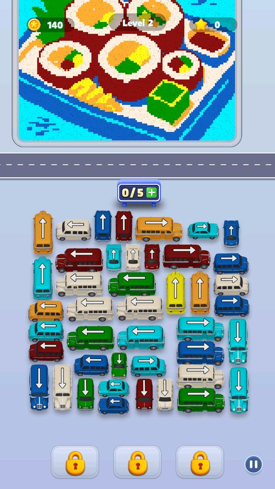
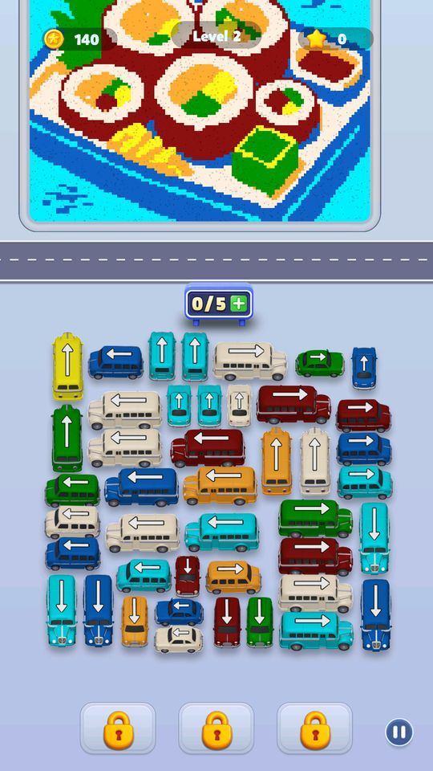

Phân màu xe theo tranh cát
Bàn xe và tranh cát là hai dữ liệu độc lập: file bàn chỉ cho vị trí, hướng, số viên của xe và một màu «khuôn»; màu cát và sức chứa thật của từng xe được tính lúc vào…
Mô tả
- Bàn xe và tranh cát là hai dữ liệu độc lập: file bàn chỉ cho vị trí, hướng, số viên của xe và một màu «khuôn»; màu cát và sức chứa thật của từng xe được tính lúc vào level.
- SandBusGameManager::_applyDynamicCarAllocation đếm cát mỗi màu (số ô × T² hạt), đếm màu ở 10% và 30% hạt đầu tiên khi quét tranh từ đáy lên, tính realOutStep cho mọi xe, rồi SandBusCarAllocator::allocate: (1) xếp xe theo số viên giảm dần, màu theo lượng cát giảm dần; (2) xe to nhất thứ i nhận màu nhiều cát thứ i (mỗi màu ít nhất 1 xe); (3) các xe còn lại lần lượt vào màu đang thiếu viên nhất so với hạn mức = tổng viên × tỉ lệ cát; (4) trong mỗi màu, cát chia cho xe theo tỉ lệ viên, phần dư cho xe có phần lẻ lớn nhất; (5) đặt các cặp (màu, sức chứa) lên xe theo bước thoát (người dùng vùng đặc biệt: xáo ngẫu nhiên); (6) level 1 ép xe đầu tiên mang màu nhiều nhất ở đáy.
- Kết quả được kiểm tra tổng cát từng màu = tổng sức chứa xe màu đó, rồi ghi vào CCubeBox (setSandColorId, sức chứa +0x1c).
- Vì vậy mọi level luôn đủ xe cho đúng lượng cát; nếu thuật toán thất bại mới dùng ánh xạ tĩnh màu khuôn → màu cát và sức chứa cố định theo viên.
Thiết kế chi tiết
Tóm tắt thiết kế
Code Lúc vào level, _applyDynamicCarAllocation đếm cát mỗi màu (ô × T² hạt, tổng 49.152), đếm màu ở 10% và 30% hạt đầu khi quét từ đáy lên, và tính realOutStep cho mọi xe.
Code SandBusCarAllocator::allocate chia xe cho màu theo hạn mức viên q = Σviên × cát màu / tổng cát (xe to nhất gieo vào màu nhiều cát nhất, xe dư vào màu thiếu nhất), rồi chia cát của màu cho các xe theo tỉ lệ viên (phần dư lớn nhất).
Code Kết quả được kiểm tra Σ sức chứa = cát cho từng màu rồi ghi vào xe (setSandColorId + sức chứa CCubeBox+0x1c). Lỗi (ít xe hơn màu…) → ánh xạ tĩnh, sức chứa 14/viên.
Code Người dùng thường: cặp (màu, sức chứa) đặt theo bước thoát — màu front/mid đi trước (thứ tự chi tiết suy luận). Người dùng vùng đặc biệt: xáo ngẫu nhiên (mt19937). Level 1: xe đầu tiên bị ép mang màu nhiều nhất ở đáy.
Code Booster xáo màu xáo chính các cặp (màu, sức chứa) → bảo toàn tổng mỗi màu.
Nhận định Đây là «máy bảo đảm giải được»: designer chỉ vẽ tranh và bàn; game tự sinh đúng số xe mỗi màu, không bao giờ thừa/thiếu cát.
Luồng người chơi từng bước
- Đếm cátClientCodeMỗi màu: số ô × T² (L1: màu 1 = 14.068 hạt, 5 màu khác ~7.010).
- Đếm đáyClientCodeQuét hàng dưới → trên: 10% đầu = front, tới 30% = mid (nhóm 40: front 20%).
- Bước thoátClientCode
calculateAllBoxesMoveSteps→ (id, viên, realOutStep) cho mọi xe có viên > 0. - Gieo xeClientCodeXe xếp theo viên giảm dần; xe thứ i vào màu nhiều cát thứ i — mọi màu có ít nhất 1 xe.
- Chia xe dưClientCodeTừng xe còn lại vào màu có (hạn mức − viên đã nhận) lớn nhất.
- Chia cátClientCodeTrong màu: sức chứa ∝ viên, làm tròn xuống, phần dư cho xe có phần lẻ lớn nhất; 1 xe thì lấy hết.
- Đặt lên bànClientCodeNgười dùng thường: theo front/mid + realOutStep; vùng đặc biệt: xáo ngẫu nhiên; level 1: ép xe đầu.
- Kiểm tra & ghiClientCodeΣ sức chứa từng màu = cát → setSandColorId + sức chứa; sai → ánh xạ tĩnh.
- Tô màuGiao diệnCodeShaderTintHelper (SoftLight-Multiply) tô sprite xe theo màu cát.

Đầu level 2 (tranh sushi): bãi ~45 xe với đúng các màu trong tranh — đỏ sẫm, kem, xanh dương, xanh ngọc, xanh lá, cam, vàng (playtest 15/11, level 2) 
Try again level 2: cùng bố cục bàn xe nhưng màu xe được chia lại (so với lần đầu) — màu xe tính lúc vào level theo tranh (playtest 15/11, level 2) - Xáo màu (booster)Người chơiCodeXáo các cặp (màu, sức chứa) của xe còn trên bàn.


Mô phỏng L1 (sandPic_1_更整, bàn 1: 20 xe, 144 viên)
| Màu | Hạt | Hạn mức viên | Viên nhận | Xe | Cỡ xe (viên×số) | Sức chứa/xe |
|---|---|---|---|---|---|---|
| 1 | 14068 | 41.2 | 42 | 5 | 6×2, 10×3 | 2.010–3.350 |
| 6 | 7036 | 20.6 | 22 | 3 | 6×2, 10×1 | 1.919–3.198 |
| 2 | 7024 | 20.6 | 20 | 3 | 4, 6, 10 | 1.405–3.512 |
| 3 | 7012 | 20.5 | 20 | 3 | 4, 6, 10 | 1.402–3.506 |
| 8 | 7008 | 20.5 | 20 | 3 | 4, 6, 10 | 1.402–3.504 |
| 5 | 7004 | 20.5 | 20 | 3 | 4, 6, 10 | 1.401–3.502 |
CodeAPK Tự mô phỏng các bước 3–7 của allocate (đọc từ disasm) trên dữ liệu APK; bước đặt lên bàn không ảnh hưởng số liệu này. Nhóm 29/44 chơi L1 bằng tranh «_更整».
Mô phỏng L10 (sandPic_10_18分组关卡, bàn 10: 62 xe, 432 viên)
| Màu | Hạt | Xe | Sức chứa/xe |
|---|---|---|---|
| 6 | 18312 | 19 | 458–1.145 |
| 1 | 6764 | 9 | 451–1.127 |
| 9 | 6056 | 8 | 449–1.121 |
| 4 | 3988 | 6 | 443–1.108 |
| 10 | 3404 | 5 | 454–1.134 |
| 7 | 3332 | 5 | 444–1.111 |
| 5 | 3072 | 5 | 439–1.097 |
| 2 | 2876 | 4 | 479–1.198 |
| 8 | 1348 | 1 | 1.348 |
CodeAPK Cùng mô phỏng; front 10% = màu 9, 1, 7, 5.
Luật allocate (code const)
| Bước | Quy tắc |
|---|---|
| Xếp xe | viên ↓, id ↑ |
| Xếp màu | cát ↓, mã màu ↑ |
| Hạn mức | q_c = Σviên·S_c/S |
| Xe dư | argmax(q_c − đã nhận), hoà ≤ 1e−6 → cát ↑ rồi mã ↓ |
| Sức chứa | max(1, ⌊S_c·v/B_c⌋) + phần dư lớn nhất |
| Kiểm tra | Σcap_c = S_c, tổng bằng nhau |
| Lỗi | no sand colors · fewer vehicles than sand colors · invalid sand color count · no sand · invalid vehicle boxId |
Code SandBusCarAllocator::allocate (disasm 0x1cdb4b0).
Vận dụng cho game khác
- Nhận định Áp dụng ngay cho mọi game «xe/hộp chứa + nguồn màu»: chia sức chứa theo tổng nguồn thay vì cố định → không cần kiểm định từng level về số lượng.
- Nhận định Hai núm độ khó rẻ: phần trăm front/mid (đáy lộ bao nhiêu thì xe ra sớm được ưu tiên) và chế độ đặt (theo bước ↔ ngẫu nhiên) — game đã dùng cả hai (nhóm 40; vùng đặc biệt).
- Nhận định Ép màu xe đầu ở level 1 là mẹo onboarding rẻ: lượt đầu tiên luôn «đúng».
- Nhận định Rủi ro: màu ít cát chỉ có 1 xe cỡ to (L10: màu 8 = 1 xe 10 viên) — nếu xe đó bị chặn sâu, cuối level chỉ còn chờ một xe; nên giới hạn realOutStep của xe duy nhất của một màu.
Ảnh cần chụp (3) — 2 ảnh đã gắn
Chụp vào screens/deep_1113/CarColorAllocation/ rồi ghi tên file vào flow[].shots.
- Tô màu: Bàn xe đầu level 1 cho thấy màu xe khớp các màu ở đáy tranh
- Xáo màu (booster): Trước/sau khi dùng booster xáo màu
- Bảng màu đa sắc: Một level đa sắc (nếu nhóm 15/16 có thể vào được)
Bảng tổng hợp mọi tính năng đã làm chi tiết: JamBus_ThietKeChiTiet.xlsx.
Mở khóa & điểm vào
Mọi level, chạy trong SandBusGameManager::createGame trước khi tạo tranh.
Điểm vào:
- Bắt đầu level (SandBusGameManager::createGame)
- Booster xáo màu (SandBusGameManager::reshuffleBoxColors)
Cách hoạt động
- SandBusGameManager::createGame: (1) bật chế độ cát; nhóm 40 → GameTuningParams::frontSegmentPercent = 20 (mặc định 10), nhóm 2/27 → initialTrackCapacity = 6; (2) GameManager::createGame dựng bàn; (3) chọn tranh: chu kỳ 225 (mặc định), 230 (nhóm 29, 42, 43, ≥ 45) hoặc 100 (nhóm 15, 16); chỉ số = ((level−1) mod chu kỳ) + 1; hậu tố file theo nhóm và khoảng level (25分组关卡, 18/19/20分组关卡, 3D_32/33分组, 多色关卡…); người dùng «vùng đặc biệt» (UserGroupMgr::isMarkedAsSpecialAreaUser) có hậu tố riêng; (4) sl::SLConfigService::parseLevelConfigData(lsMeta.json, chỉ số, "0", cfg, hậu tố) — thất bại thì nạp lại tranh 1; (5) nhóm 15/16 nạp bảng 34 màu vào BusQueue::getCarColorOverrideMap và ShaderTintHelper::getMutableColorConfigMap; (6) BQGameSystem::setSandFillTileSands(cfg.sands); (7) _applyDynamicCarAllocation: _computeFrontMidSandCounts đếm màu của front/mid segment, OperationLayer::calculateAllBoxesMoveSteps, gom (bulletCount, realOutStep) của từng xe trên bàn, SandBusCarAllocator::allocate (chia xe theo hạn mức viên, chia cát theo tỉ lệ viên, đặt theo bước thoát; người dùng vùng đặc biệt xáo bằng mt19937 seed = random_device ⊕ steady_clock), kiểm tra tổng rồi CCubeBox::setSandColorId + ghi sức chứa (CCubeBox+0x1c) cho từng xe; (8) nếu trả false → _applyParkingBoxSandColorIds + _bindParkingBoxesToSandLevelColors (ánh xạ tĩnh).
- Màu được tô bằng ShaderTintHelper (SoftLight-Multiply).
- Booster xáo màu chạy lại phân màu cho xe còn trên bàn.
Số liệu chính
| Chỉ số | Giá trị | Nguồn |
|---|---|---|
| % cát tính tới «mid» | 30 | GameTuningParams::midSegmentPercent · code const |
Use case (10)
Bấm vào từng use case để mở. Mở/đóng tất cả
UC-01 Chọn tranh cát cho level
Các bước- Tính chu kỳ: 230 nếu nhóm ∈ {29, 42, 43} hoặc > 44; 100 nếu nhóm 15/16; còn lại 225
- idx = (level−1) mod chu kỳ; chọn hậu tố theo nhóm và idx
- sl::SLConfigService::parseLevelConfigData("lsMeta.json", idx+1, "0", cfg, hậu tố); trong đó dir = groups[key].levelsDir hoặc LevelGroupSelector::getActiveGroupDir
- Thất bại và idx ≠ 0 → parse lại với chỉ số 1
| Actor | System |
|---|---|
| Trigger | SandBusGameManager::createGame(level) |
| Điều kiện | Đã có nhóm người dùng từ delegate |
| Kết quả | cfg chứa lưới cát, bảng màu, sands, tham số vật lý |
| Quy tắc / số liệu | Chỉ số > lsMeta.global.totalLevels (230) bị từ chối; levelsPerFile = 1 |
| Evidence | SandBusGameManager::createGame; sl::SLConfigService::parseLevelConfigData; sl::LevelGroupSelector::getActiveGroupDir; UserGroupMgr::isMarkedAsSpecialAreaUser |
UC-02 Ghi đè tham số theo nhóm trước khi phân màu
Các bước- Nhóm 40: frontSegmentPercent = 20
- Nhóm 2 hoặc 27: initialTrackCapacity = 6
- Nhóm 15/16 (đa sắc): nạp 34 màu chuẩn vào override map và cấu hình shader (Vec3 màu/255)
| Actor | System |
|---|---|
| Trigger | Đầu createGame |
| Điều kiện | — |
| Kết quả | Tham số toàn cục GameTuningParams thay đổi cho ván |
| Quy tắc / số liệu | Giá trị mặc định: frontSegmentPercent 10, midSegmentPercent 30 |
| Evidence | SandBusGameManager::createGame; BusQueue::getCarColorOverrideMap; ShaderTintHelper::getMutableColorConfigMap |
UC-03 Đếm màu ở đáy tranh (front/mid)
Các bước- SandBusGameManager::_computeFrontMidSandCounts duyệt lưới từ hàng dưới cùng lên, từ trái sang phải, nhân mỗi ô theo hệ số
- Front = frontSegmentPercent% ô đầu tiên (giới hạn 1–100); Mid = tới midSegmentPercent% (≥ front+1)
- Ghi hai map màu → số ô
| Actor | System |
|---|---|
| Trigger | _applyDynamicCarAllocation |
| Điều kiện | cfg có data, width, height |
| Kết quả | Biết màu nào lộ ra trước và màu nào theo sau |
| Quy tắc / số liệu | Mặc định 10% / 30% (nhóm 40: 20%). Dãy quét = từng hàng ô từ dưới lên, trái → phải, mỗi ô lặp T² lần; front = màu của frontSegmentPercent% phần tử đầu, mid = phần tới midSegmentPercent% (mid ≥ front + 1). Ví dụ L1 (sandPic_1_更整): front = màu 1 (1.339), 8, 2, 3; mid = màu 1 (2.894), 6, 5, 8. |
| Evidence | SandBusGameManager::_computeFrontMidSandCounts; SandBusGameManager::_applyDynamicCarAllocation |
UC-04 Phân màu động: chia xe và sức chứa (SandBusCarAllocator::allocate)
Các bước- Đầu vào: cát/màu (ô × T²), danh sách xe {id = CCubeBox+0x18 hoặc thứ tự + 1, viên, realOutStep} (bỏ xe 0 viên), front/mid, cờ vùng đặc biệt, cặp ép (xe, màu) của level 1
- Kiểm tra: có màu («no sand colors»), số xe ≥ số màu («fewer vehicles than sand colors»), mỗi màu > 0 («invalid sand color count»), tổng cát > 0 («no sand»)
- Xếp xe: viên giảm dần, cùng viên thì id tăng dần; xếp màu: cát giảm dần, cùng cát thì mã màu tăng dần
- Hạn mức viên của màu c: q_c = B × S_c / S (B = Σ max(1, viên), S = tổng cát)
- Gieo: xe thứ i (i < số màu) vào màu thứ i — xe to nhất nhận màu nhiều cát nhất
- Các xe còn lại theo thứ tự: vào màu có (q_c − viên đã nhận) lớn nhất; chênh ≤ 1e−6 thì ưu tiên màu nhiều cát hơn rồi mã màu nhỏ hơn
- Chia cát trong màu: 1 xe → toàn bộ; nhiều xe → cap = max(1, floor(S_c × viên / B_c)), dư/thiếu điều chỉnh theo phần lẻ (largest remainder) sao cho Σ cap = S_c
- Đặt cặp (màu, cap) lên xe: người dùng thường → hàm con dùng front/mid và realOutStep (xe ra sớm nhận màu đang lộ ở đáy — thứ tự chính xác là suy luận); vùng đặc biệt → xáo Fisher–Yates bằng mt19937
- Level 1: nếu xe được ép không mang màu nhiều nhất ở front thì đổi cặp với xe mang màu đó có sức chứa gần nhất
- _applyDynamicCarAllocation kiểm tra Σ cap từng màu = cát màu đó và tổng bằng nhau, rồi ghi màu + sức chứa vào xe
| Actor | System |
|---|---|
| Trigger | createGame |
| Điều kiện | Có xe trên bàn |
| Kết quả | Mỗi xe có màu cát; xe thoát sớm mang màu ở front segment |
| Quy tắc / số liệu | Mọi số đọc từ disasm 0x1cdb4b0 (so sánh tại 0x1ce43ec, 0x1ce58f8; eps 1e−6 tại rodata 0x1276728). Mô phỏng L1 (20 xe, 144 viên, 6 màu): màu 1 có 14.068 hạt → 5 xe (2×6 + 3×10 viên = 42 viên, hạn mức 41,2), mỗi màu còn lại ~7.010 hạt → 3 xe/20 viên; sức chứa 1.401–3.512 hạt/xe. L10 (62 xe, 432 viên, 9 màu): màu 6 18.312 hạt → 19 xe; màu 8 1.348 hạt → 1 xe 10 viên. |
| Evidence | SandBusCarAllocator::allocate; SandBusGameManager::_applyDynamicCarAllocation; SandBusGameManager::_computeFrontMidSandCounts; OperationLayer::calculateAllBoxesMoveSteps; CCubeBox::getRealOutStep; CCubeBox::getBulletCount; CCubeBox::setSandColorId; UserGroupMgr::isMarkedAsSpecialAreaUser |
UC-05 Phân màu tĩnh (dự phòng)
Các bước- SandBusGameManager::_applyParkingBoxSandColorIds gán sandColorId từ map đã có
- SandBusGameManager::_bindParkingBoxesToSandLevelColors ánh xạ màu khuôn của file level sang tập màu của tranh
| Actor | System |
|---|---|
| Trigger | _applyDynamicCarAllocation trả false |
| Điều kiện | — |
| Kết quả | Xe vẫn có màu hợp lệ |
| Quy tắc / số liệu | — |
| Evidence | SandBusGameManager::_applyParkingBoxSandColorIds; SandBusGameManager::_bindParkingBoxesToSandLevelColors |
UC-06 Tô màu xe bằng shader
Các bước- ShaderTintHelper::needsShaderTint kiểm tra màu có cấu hình
- ShaderTintHelper::getSoftLightMultiplyProgram (shader ShaderTintHelper_SoftLightMultiply, uniform u_multiplyColor)
- ShaderTintHelper::applyTintToSprite / applyShaderWithConfig; removeShaderFromSprite khi gỡ
| Actor | System |
|---|---|
| Trigger | CCubeBox::setSandColorId / refreshTintColor |
| Điều kiện | — |
| Kết quả | Một bộ sprite xe dùng cho mọi màu |
| Quy tắc / số liệu | Có cấu hình riêng cho màu 1 và màu 8 (getMutableConfigForColor1/8); incrementConfigVersion để làm mới |
| Evidence | ShaderTintHelper::applyTintToSprite; ShaderTintHelper::needsShaderTint; ShaderTintHelper::getSoftLightMultiplyProgram; ShaderTintHelper::getMutableConfigForColor1; ShaderTintHelper::incrementConfigVersion |
UC-07 Booster xáo màu (chế độ cát)
Các bước- SandBusGameManager::reshuffleBoxColors → GameManager::reshuffleBoxColors (hiệu ứng)
- Duyệt xe trên bàn: getBulletCount, getColor, getSandColorId; tính lại và CCubeBox::setSandColorId
| Actor | Player |
|---|---|
| Trigger | Dùng booster xáo màu |
| Điều kiện | Còn xe trên bàn |
| Kết quả | Xe đổi màu cát |
| Quy tắc / số liệu | Xáo Fisher–Yates (mt19937) các cặp (màu cát, sức chứa) của xe còn trên bàn rồi gán lại → tổng cát mỗi màu = tổng sức chứa giữ nguyên, level vẫn giải được (disasm SandBusGameManager::reshuffleBoxColors, ghi CCubeBox+0x1c cùng setSandColorId). |
| Evidence | SandBusGameManager::reshuffleBoxColors; GameManager::reshuffleBoxColors; CCubeBox::getSandColorId; CCubeBox::setSandColorId |
UC-08 Khởi tạo tranh sau phân màu
Các bước- SandUpperController::create/init; số hàng hút, chu kỳ theo nhóm
- Đăng ký callback thắng (setVictoryCb); lịch SandBusGameManager_onUpdate mỗi frame
| Actor | System |
|---|---|
| Trigger | Cuối createGame |
| Điều kiện | — |
| Kết quả | Ván chơi bắt đầu |
| Quy tắc / số liệu | Xem SandPainting |
| Evidence | SandUpperController::init; SandUpperController::setVictoryCb; SandBusGameManager::onUpdate |
UC-09 Level 1: ép màu xe đầu tiên
Các bước- _applyDynamicCarAllocation tìm màu có số hạt lớn nhất trong 10% đáy
- Đặt cặp ép (id xe đầu danh sách, màu đó) vào Input (+0x60/+0x64)
- Sau khi allocate đặt cặp, nếu xe đó mang màu khác thì đổi với xe mang màu ép có sức chứa gần nhất
| Actor | System |
|---|---|
| Trigger | SandBusGameManager+0x1c (số level) = 1 |
| Điều kiện | Có front segment và danh sách xe |
| Kết quả | Xe đầu tiên của level 1 luôn có màu đang lộ nhiều nhất ở đáy — lượt chạm đầu tiên chắc chắn có ích |
| Quy tắc / số liệu | Chỉ level 1 (createGame ghi số level vào +0x1c) |
| Evidence | SandBusGameManager::_applyDynamicCarAllocation; SandBusCarAllocator::allocate; SandBusGameManager::createGame |
UC-10 Người dùng vùng đặc biệt: màu ngẫu nhiên
Các bước- Input+0x68 = cờ vùng đặc biệt
- Danh sách cặp (màu, sức chứa) được xáo Fisher–Yates bằng mt19937 seed = random_device(/dev/urandom) ⊕ steady_clock::now
- Gán lại cho xe theo thứ tự, bỏ qua bước đặt theo front/mid
| Actor | System |
|---|---|
| Trigger | UserGroupMgr::isMarkedAsSpecialAreaUser = true (CN/TR/VN, nhóm 44) |
| Điều kiện | allocate thành công bước chia |
| Kết quả | Màu xe không còn ưu tiên đáy tranh → level khó đoán hơn (suy luận) |
| Quy tắc / số liệu | Cũng là nhóm dùng tranh mặc định (createGame bỏ hậu tố tranh cho vùng đặc biệt) |
| Evidence | SandBusCarAllocator::allocate; UserGroupMgr::isMarkedAsSpecialAreaUser; SandBusGameManager::createGame |
Cấu hình (18)
Gộp mọi nguồn: const trong pseudo-C của libMyGame.so, JSON/CSV giải mã trong APK (assets_dec/), storage key (MMKV / UserDefault), nhóm A/B, giá trị server / Firebase RC trong snapshot thiết bị 13/11/2026.
| Nguồn | Key | Kiểu | Giá trị | Ý nghĩa | Nơi định nghĩa |
|---|---|---|---|---|---|
| code const | GameTuningParams::frontSegmentPercent | int | 10 (nhóm 40: 20) | % cát đáy tính là «front» | .data 0x3d7c3b0; SandBusGameManager::createGame |
| code const | GameTuningParams::midSegmentPercent | int | 30 | % cát tính tới «mid» | .data 0x3d7c3b4; _computeFrontMidSandCounts |
| code const | sand cycle | int | 225 mặc định; 230 nhóm 29/42/43/≥45; 100 nhóm 15/16 | Số tranh trước khi lặp | SandBusGameManager::createGame (0xe1/0xe6/100) |
| code const | lsMeta key | string | "0" | Khoá nhóm truyền vào parseLevelConfigData | SandBusGameManager::createGame |
| json default | lsMeta.global | object | levelsPerFile 1, totalLevels 230, filePrefix sandPic_, colors 10 màu | Mô tả bộ tranh | assets_dec/lsMeta.json |
| json default | lsMeta.groups | object | 0/5/14 → default; 18/19/20 → 18分组关卡/19分组关卡/20分组关卡 (+12 màu) | Thư mục tranh theo nhóm | lsMeta.json |
| asset | Biến thể sandPic (hậu tố → số file, level) | json | (không hậu tố) 225 L1–225; _25分组关卡 200 L31–230; _多色关卡-128列 100; -256列 100; _19分组关卡 40 L2–41; _18分组关卡 36 L1–36; _3D_32分组 29 L2–30; _3D_33分组 29; _20分组关卡 10 L2–11; _3D关卡 6; _更整 5; _适中 5; _5…_9分组 1 mỗi loại | 790 tranh | assets_dec/sandPic_*.json |
| code const | nhóm → hậu tố (suy luận theo điều kiện idx) | rule | nhóm 32/33 idx<30 → 3D_32/33分组; 18 idx 1–29 → 18分组; 19 idx 1–40 → 19分组; 20 idx 1–10 → 20分组; 25, 34–38, 41 và 29/42/43/≥45 idx ≥30 → 25分组关卡; 15/16 → 多色关卡; 5–9, 12 idx 0 → _5…_9分组 (suy luận) | Chuỗi hậu tố không còn trong pseudo-C; ghép theo khoảng level khớp số file | SandBusGameManager::createGame |
| code const | bảng 34 màu (nhóm 15/16) | Color3B | 1 FF3240, 2 FF269F, 3 FF5294, 4 DF2455, 5 FF98A3, 6 F63C3F, 7 A073E7, 8 E749B6, 9 AD00AC, 10 C538C3, … 33 010101, 34 BBB6B7 | Trùng 多色标准色库.txt | SandBusGameManager::createGame; assets_dec/多色标准色库.txt |
| json default | Màu khuôn file level vs màu tranh (L1) | stat | xe {2,3,4,6,7,8,9}, 144 viên; tranh {1,2,3,5,6,7,8}, 12.288 ô | Chứng tỏ màu file level chỉ là khuôn | configs_level1-*.json, sandPic_1.json |
| asset | Tham số chia màu (tiếng Trung, rodata) | string | 最多颜色占比最小值, 次要颜色占比最小值, 总颜色数量最小值, 剩余颜色中占比最小颜色数量, 新颜色占比, 新增颜色数, 主要颜色数量, 第三步, 第十步及以上 | Thuộc công cụ biên tập OperationLayer::distributeBoxColorsBySteps (không có lời gọi; đọc «盒子颜色分配配置.json» không có trong APK) — không ảnh hưởng phân màu lúc chơi | libMyGame.so .rodata (OperationLayer::distributeBoxColorsBySteps — suy luận) |
| asset | Shader | string | ShaderTintHelper_SoftLightMultiply, u_multiplyColor | Tô màu xe | ShaderTintHelper::getSoftLightMultiplyProgram |
| code const | allocate: thứ tự xe | rule | viên giảm dần, id tăng dần | Xe to được gieo trước | so sánh 0x1ce43ec |
| code const | allocate: thứ tự màu | rule | cát giảm dần, mã màu tăng dần | Màu nhiều cát nhận xe to nhất | so sánh 0x1ce58f8 |
| code const | allocate: hạn mức viên | formula | q_c = Σviên × S_c / S; xe dư vào argmax(q_c − đã nhận), eps 1e−6 | Chia xe theo cát (Hamilton) | SandBusCarAllocator::allocate |
| code const | allocate: sức chứa xe | formula | cap = max(1, floor(S_c × viên / B_c)) + phần dư theo phần lẻ; 1 xe → S_c | Σ cap = S_c | SandBusCarAllocator::allocate |
| code const | allocate: lỗi | string | no sand colors · fewer vehicles than sand colors · invalid sand color count · no sand · invalid vehicle boxId | Allocator trả lỗi → dùng phân màu tĩnh | rodata, SandBusCarAllocator::allocate |
| code const | RNG | rule | mt19937 seed = random_device("/dev/urandom") ⊕ steady_clock | Xáo cặp cho vùng đặc biệt; hàm con đặt theo bước cũng dùng phân phối đều | SandBusCarAllocator::allocate |
Giao diện (UI)
| Element | Class | Mục đích |
|---|---|---|
| Màu thân xe | ShaderTintHelper | Tint sprite xe theo màu cát |
| Overlay đổi màu | CCubeBox::createColorChangeOverlay | Hiệu ứng khi xáo màu |
Storage keys
sl_level_group_dir (UserDefault, thư mục nhóm tranh — LevelGroupSelector)
Chưa đọc được / ghi chú
- Hàm con đặt cặp (màu, sức chứa) theo front/mid và realOutStep (allocate+0x15ac, ~3 KB) chỉ đọc ở mức cấu trúc: dựng danh sách màu front → mid, sắp xếp, có xáo trong nhóm; thứ tự ưu tiên chính xác giữa các xe cùng bước là suy luận.
- Tranh _25分组关卡 dùng màu 11/12 trong khi bảng màu lấy theo khoá nhóm «0» — chưa kiểm chứng hiển thị.
- Xe trong hang/băng tải có được tính vào danh sách xe của allocator hay không phụ thuộc getAllBoxesOnDesktop (suy luận: có, vì hasBoxesOnDesktop tính cả xe ẩn).
Tính năng liên quan
Bàn xe & lái xe ra Tranh cát & hút cát Dữ liệu level & nhóm level Đường vòng & ô chờ xe Vật phẩm hỗ trợ (booster) Remote config & thử nghiệm AB
Nguồn đã đọc
- pseudoc/SandBusGameManager.c
- pseudoc/SandBusCarAllocator.c
- pseudoc/ShaderTintHelper.c
- pseudoc/sl__SLConfigService.c
- assets_dec/lsMeta.json
- assets_dec/sandPic_*.json
- assets_dec/多色标准色库.txt
- work/libMyGame.so (.rodata, GameTuningParams)
- work/libMyGame.so (disasm capstone 15/11: SandBusCarAllocator::allocate 0x1cdb4b0, comparator 0x1ce43ec/0x1ce58f8, SandBusGameManager::_applyDynamicCarAllocation)